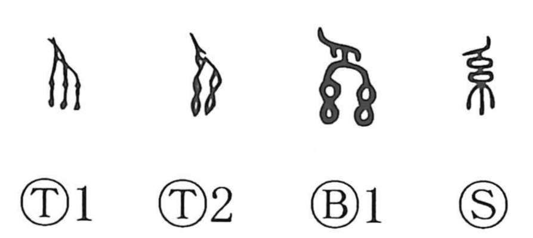

系

Kun: suji | On: kei
lineage ・ system ・ line ・ strand
Explanation
This graph began as a pictograph of decorative cords hung in parallel, the strands dangling down. In some ancient forms a hand (爪) is added above, shown grasping and suspending the ornamented threads—a sight familiar at funerals, where a bunch of cords (sokei) was fixed and allowed to hang as a mourning emblem. Because it portrays something suspended, the character was also used as a loan for the idea of hanging or putting up. From the concrete image of an itosuji—a line of thread—it came to denote a line that continues through time, such as a bloodline or family line, and by extension a system or any continuing sequence.